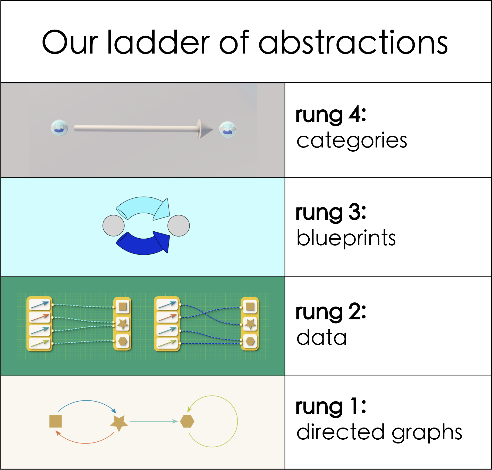

Introduction#
Systems thinking, relational thinking, and software#
Biological systems, computer systems, healthcare systems, the solar system, and on and on…
Systems come in different flavors and forms! Even though the word “system” is quite familiar, it is quite hard to say precisely what it means! Loosely stated, a system is a bunch of things interacting together, somehow! The idea of a system seems quite abstract, and more often, hard to think about. What should you or I do when we are part of a system? How does we act in order to change things? What causes what, when everything is interlinked? How do we know what is part of a system, and what isn’t?
Yet the notion of system persists. Despite its own lack of clarity, it clearly points to a real phenomenon, a phenomenon that is important for us to reference as we try to navigate the world. Thinking in systems promises a new way of looking at the world holistically [1]. It’s a way of thinking that emphasises relationships and context, and deemphasises analysis by reduction and deconstruction.
In this book, we will focus on a specific aspect of systems thinking we term ‘relational thinking’. Relational thinking seeks to understand an object by looking at it outwards, asking how the object interacts, rather than inwardly, asking what the object is made of. It’s an excitingly and refreshingly different viewpoint from the ways we often are taught to think. And it’s a powerful one.
Mathematics for relational thinking#
The power of a way of thinking can be amplified by mathematics. Mathematical tools for thinking, including thinking relationally, are useful and powerful, because they provide assistance in thinking carefully, keeping you on the right path to getting conclusions you can trust and explain to others. Without such tools, it can be hard to know whether systems thinking is providing a productive framing, or just new ways to be puzzled and to disagree.
One challenge with relational thinking is that formal tools for thinking relationally are a relatively new topic of research. We are actively discovering the logic behind various systems, and discovering effective ways to rigorously reason about them.
Nonetheless, even though mathematics hasn’t historically emphasised a systems perspective, there are some promising avenues in mathematics for relational thinking. A key mathematical tool for relational thinking, known as category theory, emerged in the 1940s. While this is almost a century ago, developing mathematics is a slow, patient, and inter-generational effort, and it’s only in recent decades it is developing as a tool for systems thinking in the real world.
A second challenge presents itself, however: mathematics itself can be difficult to learn, especially when it is still an active topic of research and even the world-leading mathematicians do not always explain themselves well. In this regard, the purpose of this book is to give the reader the experience of mathematical relational thinking without requiring the mastery of any of the abstract tools of category theory. This is made available to us by leaning on the encoding of these category theoretic ideas into software, via the AlgebraicJulia project.
AlgebraicJulia#
AlgebraicJulia is a collection of libraries in the programming language Julia, that provide tools for model-driven science. A model is a simplified description of another thing, that highlights important features, and forgets the ones less relevant. For example, picture a collection of clay balls that represent the sun and planets in the solar system – it might capture some aspects of the relative sizes of the planets and their distance from the sun, but forget what the planets are composed of. (Jupiter is not made of clay!) Models make it easier to reason, and do data science, around complicated things we encounter in our lives. AlgebraicJulia lets us use a systems perspective to create models for scientific computing. Its design is heavily informed by the insights developed in category theory over the past 100 years.
While AlgebraicJulia is still a software ecosystem under development, and is not yet ready to meet all general purpose scientific modelling needs, we believe it is mature enough to be a significant aid in practicing relational thinking.
Key ideas#
The goal of this book is to give you, the reader, an experience of relational thinking. This differs from many mathematical texts, in that we do not seek to give abstract definitions, construct general theory, and prove mathematical theorems. Instead, we focus on a particular example that, while simple in nature, allows for deep dive through relational thought. Although we focus on a particular, simple example, the relational patterns of thought we will experience are general in nature, and apply much more broadly.
The example we have chosen is that of directed graphs: a simple language of dots and arrows between them. This is possibly the barest example we could have chosen. Yet we will see that even in this simple case, there are thorny questions, particularly around what we shall call ‘dangling edges’. And we will also see that by thinking relationally, these questions can be easily and naturally resolved.
Climbing the ladder of relational abstractions#
Our first task, then, is to learn to think about directed graphs from a relational perspective. To do so, we slowly step up a four rung ladder of relational thinking. This cover the first part of the book.

Beginning in the concrete world of directed graphs as pictures made up of dots and arrows, each rung takes us through a conceptual shift that is required to move us into a world of relational models.
In Chapter 0, we meet a few examples of directed graphs, as well as the problem of dangling edges. Chapter 1 moves us into the world of data, showing how we can provide an abstract representation of directed graphs that captures their core essence, no more or less. We reflect on what makes a good abstraction. This allows us to represent graphs as data, and hence make them amendable to computer reasoning, through tools like AlgebraicJulia. After the more mathematical nature of Chapter 1, Chapter 2 then shows the immediate payoff: we learn a bit about AlgebraicJulia, and how to use directed graphs as data to program dynamical systems.
In Chapter 3 we move from the world of data to the world of blueprints. Also called schema, blueprints provide a framework for describing different sorts of data. For example, while we focus on the blueprint for directed graphs, we see directed graphs as part of a family of different sorts of data, including undirected graphs, three and higher dimensional shapes, interacting processes, and more. The payoff of understanding the blueprint for graphs is that it immediately helps us understand the appropriate notion of relationship between graphs, and hence the universe of possible graphs. This is the focus of Chapter 4, which moves us from the world of blueprints to the world of universes, also known as categories. This takes us to the top of our ladder of relational thinking.
Appreciating the relational view#
Once at the top of our ladder, we can begin to appreciate the view. Now in the world of relational models, our second goal, is to use these models to think relationally. Chapter 5 uses relationships between graphs to help us think about when two graphs are the same, when a graph is a part of another graph, how to describing a collection of interrelated graphs, and ultimately how to construct new graphs by gluing graphs together. Chapter 6 then builds on this to describe how graphs evolve, or change over time. Finally, Chapter 7 shows the payoff, extending this to more complicated blueprints, so that we may model changes in our physical world, or reason about processes like making a sandwich in your kitchen.
Ultimately, through this experience, we hope that you’ll come away with a sense of the importance of finding good abstractions, identifying the ways objects relate to each other, situating them in the context of other objects they relate to, and contextualing them models in the space of possibilities. We also hope that you’ll see the concrete payoffs, especially by doing this formally via a programming language, so that we can automatically extract and benefit from the insights that come from a relational perspective. Indeed, while it may seem in the beginning like we’re just finding different, more abstruse ways of describing directed graphs, we hope that in the problem of dangling edges you’ll see how the payoff naturally emerges, with seemingly little effort.
How we’ve designed this book#
Reader background#
We have chosen not to assume any particular prior mathematical or programming knowledge in the design of this book. That said, it is written from a mathematical viewpoint, and a reader with some familiarity with the style of thinking will find it easier going. But we hope that some readers will also use this book as a way to get acquianted with mathematical thought.
In terms of difficulty, the book starts very concretely, but ramps up in difficulty as we get to the top of the ladder, peaking in Chapter Five. Again, however, once we’re at the top, we can begin to appreciate the view, and we focus more on unpacking the beautiful implications of our ideas, rather than introducing new complexity.

The book is intended to be read somewhat linearly, with each chapter depending on the last. The exception is Chapter Two, which provides a bit of relief in our climb to introduce more of AlgebraicJulia, and provide some fun ways to program and explore dynamical systems using directed graphs.
// Add dependency graph of chapters
Live, in-line code#
Similarly, a reader with an introductory experience to programming will find such experience helpful. For example, to deeply engage with AlgebraicJulia, it is useful to have a local installation of the Julia language and AlgebraicJulia libraries. Nonetheless, we have endeavoured to ensure this is not necessary to understand the main messages of this book. We have done this by embedding editable, executable in-line code blocks in most chapters.
For example, here is one.
print( "My in-line code is working, yay!" )
To run the code, click the “rocket icon” at the top right corner of this page, and select “Live code”. Enabling live code will cause a button labelled “run” to appear in each executable code block. Clicking “run” will run the code in the block.

The live code environment may take a little time[2] to start up, similar to the way a computer may take a while to boot up when first turned on. While it is starting up, a “Waiting for kernel…” message will be displayed. Once the environment is running, responses should be faster. Because of this delay, it may be worth enabling live code as soon as you open a new chapter, so it can start up in the background while you read.
Puzzles#
Each chapter contains a few puzzles. These puzzles provide an opportunity to take an active role in exploring and internalising the key lessons of the chapter. We encourage to you attempt them, spend some time with them, and play, even use them as a jumping off point for daydreaming about relational thinking. There is no rush.
Puzzle
You can edit the code blocks, and run them again! See if you can edit the program above so it prints a sentence describing your motivation for reading this book, instead of just “My in-line code is working, yay!”.
A new medium for systems thinking#
As Andy Matuschak and Michael Nielsen write in their essay “How can we develop transformative tools for thought?”[3]:
Such a medium creates a powerful immersive context, a context in which the user can have new kinds of thought, thoughts that were formerly impossible for them. Speaking loosely, the range of expressive thoughts possible in such a medium is an emergent property of the elementary objects and actions in that medium. If those are well chosen, the medium expands the possible range of human thought.
We have not yet fully realised the potential of a new medium for systems thinking. But as Matuschak and Nielsen note, the range of possible thoughts is an emergent property of the elementary objects and actions. In systems thinking, these notions are ones of relationality; the same ones that category theorists have carefully studied for the last century. We believe the work we share here, grounded in the mathematics of category theory, thus gives a glimpse of a powerful start. The work of the AlgebraicJulia project is to expand this mathematical medium into an embodied, software technology, from mathematics to programming languages and eventually to computer applications. We invite you on this journey to expand the possible range of human thought to consider the world in a holistic, relational, and interconnected way.
Many of the great challenges of today are a result of our shared struggle to see the world in its beautiful, complex, interconnected glory. We hope that this book is a contribution to facing these challenges together.